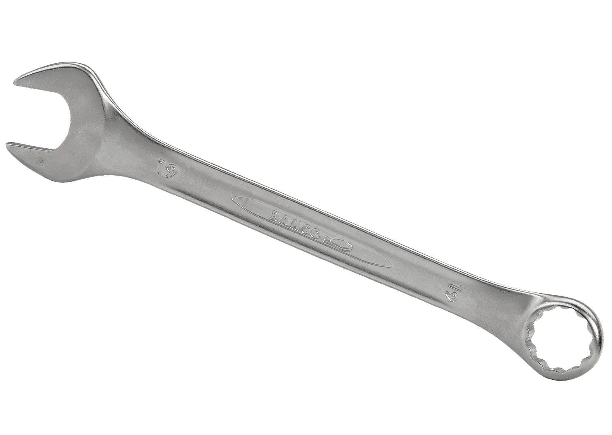
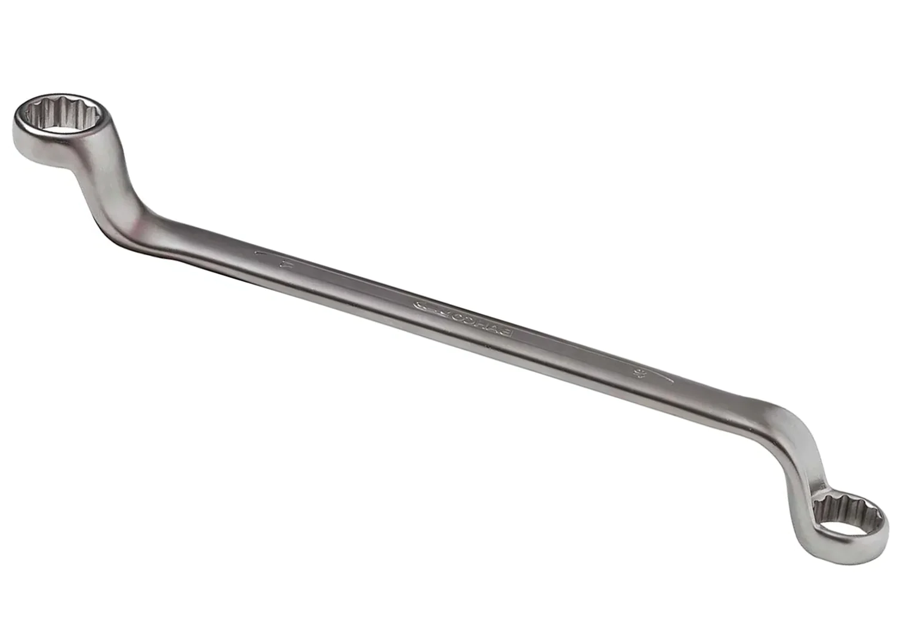
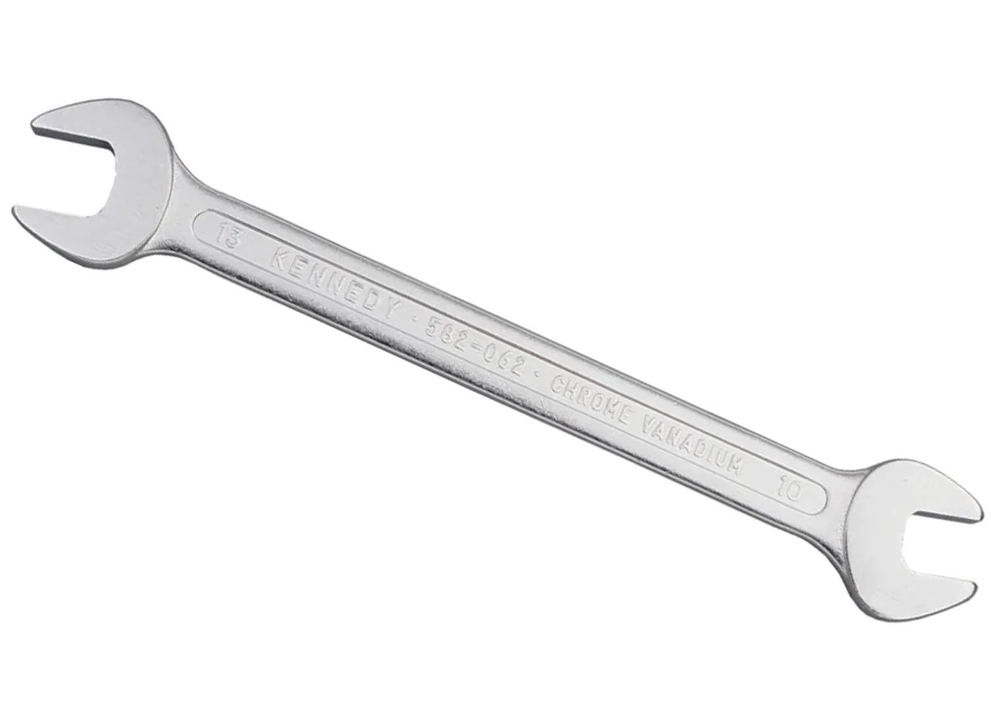
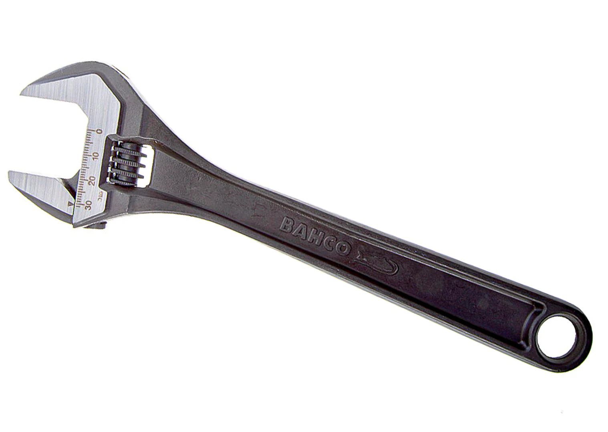

.jpg) ประแจ คือเครื่องมือสำหรับขันเกลียวนอตหรือ ยึดอุปกรณ์ต่างๆเท่าที่คุณจะนึกออก มีลักษณะเป็นด้ามจับ
ส่วนหัวมีรูปทรงตามสิ่งที่จะใช้ขัน ประแจผลิตจากเหล็กกล้าโดยส่วนใหญ่ ซึ่งเหล็กกล้าจะมีความแข็งแรงมากกว่าเหล็กทั่วไปเพื่อที่ต้องทนต่อแรงดึงหรือแรงดันมากพอสมควร ประแจมีรูปร่างและขนาดแตกต่างกันออกไป
ตามลักษณะการใช้งาน
ประแจ คือเครื่องมือสำหรับขันเกลียวนอตหรือ ยึดอุปกรณ์ต่างๆเท่าที่คุณจะนึกออก มีลักษณะเป็นด้ามจับ
ส่วนหัวมีรูปทรงตามสิ่งที่จะใช้ขัน ประแจผลิตจากเหล็กกล้าโดยส่วนใหญ่ ซึ่งเหล็กกล้าจะมีความแข็งแรงมากกว่าเหล็กทั่วไปเพื่อที่ต้องทนต่อแรงดึงหรือแรงดันมากพอสมควร ประแจมีรูปร่างและขนาดแตกต่างกันออกไป
ตามลักษณะการใช้งาน
ประเภทของประแจ
วิธีการใช้ประแจให้ปลอดภัย
วิธีบำรุงรักษาประแจ
ประเภทของประแจ
-ประแจแหวนข้างปากตาย (Combination Wrench)
ประแจรวม หรือ ประแจแหวนข้างปากตาย คือ ประแจที่รวมเอารูปร่างและคุณสมบัติของประแจปากตายและประแหวนเข้าด้วยกันซึ่งด้านหนึ่งเป็นประแจแหวน อีกด้านหนึ่งเป็นประแจปากตาย

-ประแจแหวน (Box-Ended Wrench)
ประแจแหวน คือ ประแจที่ใช้กับแรงกดหรือขันมาก ประแจชนิดนี้จับเหลี่ยมของโบลต์และน็อตได้เต็มที่ ดังนั้นจึงใช้แรงดึงและดันได้สูงมาก แต่การใช้งานต้องอยู่ในตำแหน่งที่เหมาะสมจึงจะจับชิ้นงานได้อย่างสมบูรณ์

-ประแจปากตาย (Open Ended Wrench)
ประแจปากตายมีปลายทั้งสองด้านเป็นรูปตัวยู (U) ซึ่งมีขนาดที่ไม่เท่ากัน ในการใช้งานจะต้องระวังอย่าขันแน่นมากเกินไป เพราะจะทำให้สลักเกลียวเสียหายได้ ประแจปากตายไม่ต้องการใช้แรงขัน หรือคลายมากนักเพราะมีด้านที่รับแรงจริง ๆ เพียง 2 ด้าน

-ประแจเลื่อน (Adjustable Wrench)
ประแจแบบปรับได้เรียกอีกอย่างว่าประแจวงเดือน พวกเขาเป็นหนึ่งในตัวเลือกที่ได้รับความนิยมมากที่สุดในปัจจุบันเนื่องจากความเก่งกาจ มีลักษณะเป็นเสี้ยวที่ปรับได้ซึ่งมักจะควบคุมโดยสกรูที่คุณหมุน ประแจนี้สามารถทำงานทั้งหมดของประแจแบบอยู่กับที่
ยกเว้นว่าคุณต้องการเพียงอันเดียวแทนที่จะเป็นทั้งชุด

Back to top
วิธีการใช้ประแจให้ปลอดภัย
• เลือกใช้ประแจที่มีขนาดของปาก และความยาวของด้ามที่เหมาะสมกับงานที่ใช้ ไม่ควรต่อด้ามให้ยาวกว่าปกติ
• ปากของประแจต้องไม่ชำรุด เช่น สึกหรอ ถ่างออก หรือร้าว
• เมื่อสวมใส่ประแจเข้ากับหัวน็อต หรือหัวสกรูแล้ว ปากของประแจต้องแน่นพอดี และคลุมเต็มหัวน็อต
• การจับประแจสำหรับผู้ถนัดมือขวา ให้ใช้มือขวาจับปลายประแจ ส่วนมือซ้ายหาที่ยึดให้มั่นคง ร่างกายต้องอยู่ในสภาพมั่นคง และสมดุล
• การขันประแจไม่ว่าจะเป็นขันให้แน่น หรือคลายต้องใช้วิธีดึงเข้าหาตัวเสมอ และเตรียมพร้อม สำหรับปากประแจหลุดขณะขันด้วย
• ควรเลือกให้ประแจชนิดปากปรับไม่ได้ก่อน เช่น ประแจแหวน หรือประแจปากตาย ถ้าประแจเหล่านี้ใช้ไม่ได้ จึงค่อยเลือกใช้ประแจชนิดปากปรับได้ เช่น ประแจเลื่อน แทน
• การใช้ประแจชนิดปากปรับได้ เช่น ประแจเลื่อน ต้องให้ปากด้านที่เลื่อนได้อยู่ติดกับผู้ใช้เสมอ
• การใช้ประแจชนิดปากปรับได้ ต้องปรับปากประแจให้แน่นกับหัวน็อตก่อน จึงค่อยออกแรงขัน
• ปาก และด้ามของประแจต้องแห้งปราศจากน้ำมัน หรือจาระบี
• การขันน็อต หรือสกรูที่อยู่ในที่แคบ หรือลึก ให้ใช้ประแจกระบอก เพราะปากของประแจกระบอกจะยาว สามารถสอดเข้าไปในรูที่คับแคบได้
• ขณะขันประแจต้องอยู่ระนาบเดียวกันกับหัวน็อต หรือหัวสกรู
• ไม่ควรใช้ประแจชนิดปากปรับได้กับหัวน็อต หรือสกรูที่จะนำกลับมาใช้อีก เพราะหัวน็อต หรือสกรูจะเสียรูป
Back to top
วิธีบำรุงรักษาประแจ
• ตรวจสอบตรวจซ่อมประแจให้มีสภาพการใช้งานได้อย่างมีประสิทธิภาพ
• ทำความสะอาดหลังการใช้งานทุกครั้ง
• ก่อนนำไปเก็บ ให้ชโลมนำมันเครื่องใสทุกครั้ง
Back to top
แหล่งที่มา : https://www.kachathailand.com/articles/%E0%B8%9B%E0%B8%A3%E0%B8%B0%E0%B9%81%E0%B8%88-%E0%B9%81%E0%B8%95%E0%B9%88%E0%B8%A5%E0%B8%B0%E0%B8%9B%E0%B8%A3%E0%B8%B0%E0%B9%80%E0%B8%A0%E0%B8%97-%E0%B8%9E%E0%B8%A3%E0%B9%89%E0%B8%AD%E0%B8%A1/
แหล่งที่มา : https://northpower.co.th/pages/%E0%B8%9B%E0%B8%A3%E0%B8%B0%E0%B9%81%E0%B8%88-%E0%B8%84%E0%B8%B7%E0%B8%AD-%E0%B8%9B%E0%B8%A3%E0%B8%B0%E0%B9%81%E0%B8%88%E0%B8%A1%E0%B8%B5%E0%B8%81%E0%B8%B5%E0%B9%88%E0%B8%8A%E0%B8%99%E0%B8%B4%E0%B8%94